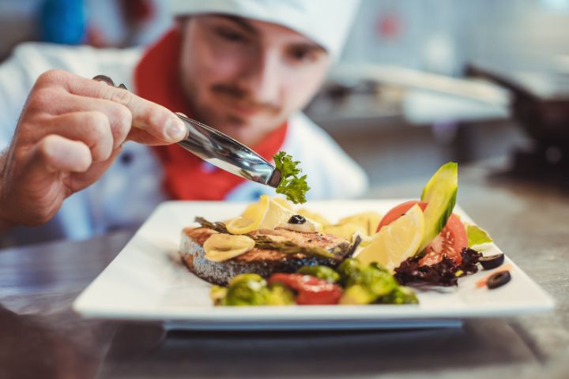

The Culinary Pinnacle
Elevate Your Palate to Epic Heights
Welcome to The Culinary Pinnacle, where gastronomy reaches its zenith, and epicurean adventures await. Embark on a culinary journey like no other, where flavors become legends, and every bite is an ascent to greatness. Here, we curate the finest recipes, the most tantalizing dishes, and the secrets of master chefs, all to elevate your palate to epic heights. Dive into a world of delectable wonders, where each meal is a chapter in a grand epic of taste and indulgence. Discover the artistry of flavors, the symphony of ingredients, and the culinary mastery that transforms ordinary moments into extraordinary feasts. Whether you're a seasoned chef or an aspiring home cook, The Culinary Pinnacle is your portal to culinary excellence. Join us as we explore the pinnacle of taste, where desire and epicness converge to create unforgettable dining experiences. Your epicurean adventure begins here, and it's destined to be legendary.